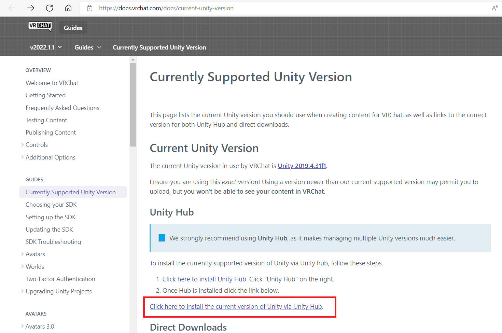
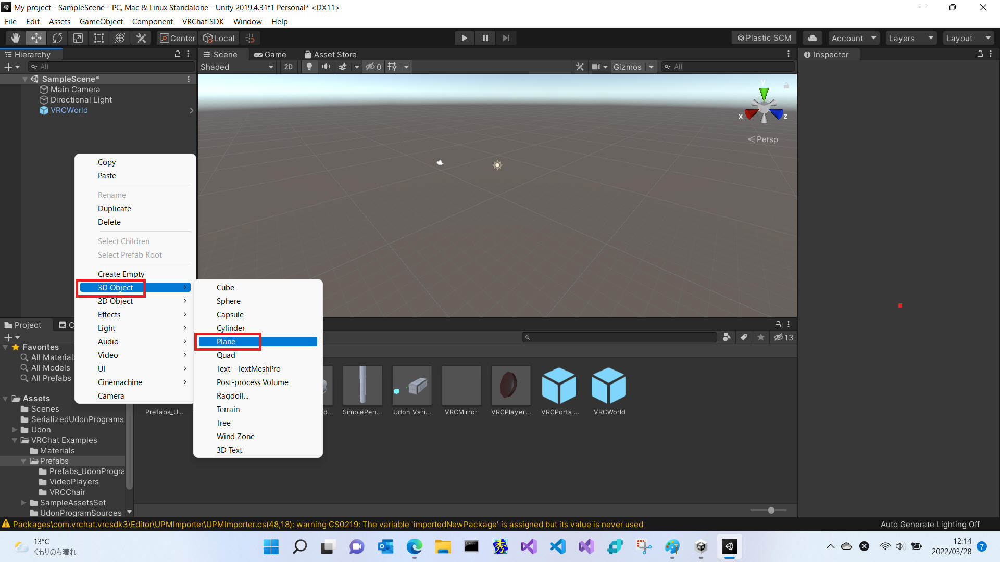
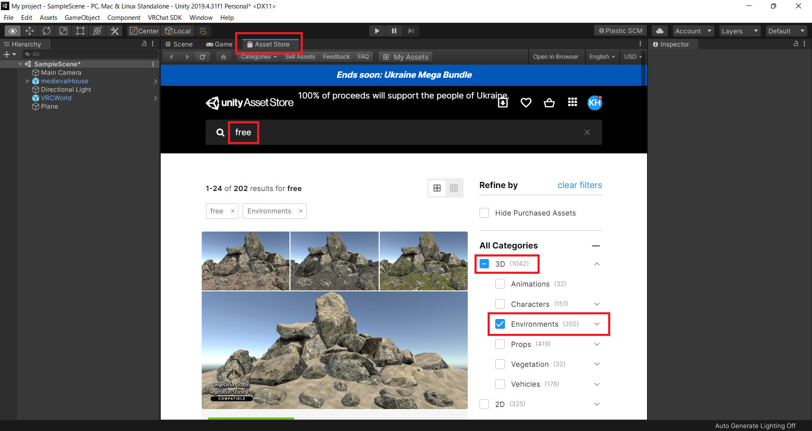

［注意］ファイルを適切な場所に保存後、最初にCSSへのパスが適正であるかを確認すること。
［概要を記載します］
“https://hello.vrchat.com/” へ PC または スマホからアクセスします。
”Registration” からアカウントを作成します。
「Choose a Username」は、必ず半角英数字で入力。
ここは日本語や全角文字でも入力出来てしまいますが、そうすると VR デバイスからのログインがとても大変になります。
VRChat はただのゲームではなく、そこで長い時間を過ごし、たくさんの友達との関係をはぐくんでいく場所です。IDを乗っ取られてしまうことは、SNSのIDを失うことと同じか、またはそれ以上に重篤な事態です。ですからVRCは必ず二要素認証を設定しておきましょう。
VRChat で使用できる Unity バージョンは、新しくても古くてもダメです。
使用できるバージョン番号を指定されています。
下記サイトで、使用できるUnityバージョンを確認して作業を進めます。
https://docs.vrchat.com/docs/current-unity-version
本書記載時点では「Unity 2019.4.31f1」と書いてあります。
「Click here to install Unity Hub」をクリックしてインストールを行います。
「Unity Hub」をインストールして起動まで行っておきます。
次に「Click here to install the current version of Unity via Unity Hub.」をクリックしてVRChatに対応しているUnityをインストールします。

これをクリックすると、起動済みの「Unity Hub」画面が下図のようになりました。
インストールする Unity
のバージョンが上記と一致することを念のために確認しましょう。
必要なアイテムを追加チェックして、［Install］ボタンをクリックします。
一旦デフォルトのままで私は進めてみます。（私は “Microsoft Visual Studio 2019” の有償版を持っていますしね。）
追伸：
Language Pack の日本語だけ追加してみました。
インストール中の画面です。
これでUnity HubとVRChatに対応したUnityのインストールは完了です。
事前にSDKを準備します。
“https://vrchat.com/home/download“ を開き、”SDK3”
をダウンロードします。
私の場合は下記ファイルをダウンロードできました。
Unity を起動し、［New project］をクリックします。
テンプレートから「3D」を選択し、”Project name” にあなたのプロジェクト名を入力後、［Create project］ボタンをクリックします。
長めの時間を待つ必要がありますが、準備が進むと下記のような画面を表示して Unity を起動します。
ダウンロードした VRCSDK をプロジェクトへインポートします。
”Assets” > “Import Package“ > “Custom
Package“
をクリックし、先ほどダウンロードした SDK3
(ファイル名の例：”VRCSDK3-WORLD-2022.02.16.19.13_Public.unitypackage”) を選択します。
下図のような画面を表示するので、確認して問題なければ［Import］ボタンをクリックします。
インポートが終わったら『Asset』の中にある『VRChat Exanples』から『Prefabs』の中にある『VRC WORLD』を『Hierarchy』の中にポイっと入れます。
これで準備完了です。
次に床を作ります。
「Hierarchy」の所で右クリックし、「3D Object」から「Plane」を選択します。

これで床が出来ました。床の大きさは『scale』で自由に変えることが出来ます。
Asset Store から無料のモデルを探してこれを使用してみたいと思います。
“free“, “3D“, “Environment“ をキーワードに絞り込んで探します。

今回は下図のような素敵な家を見つけたので、こちらをダウンロードして使用します。
ダウンロードした Assets の中からモデルを選択肢でドラッグ＆ドロップ。少し位置調整をした結果が下図のような感じです。
同様に空の色も設定してみます。
”skybox” をキーワードに無料のものを探しました。今回は下記のものを採用してみます。
好きな Material を選んで Scene へドロップします。これで設定完了です。
床のテクスチャーも同様に無料のものをダウンロードして使ってみます。
同様に適当にテクスチャーを選んで、こんな感じになりました。
ワールドをアップロードする前にスポーン地点を決めておきましょう。
スポーン地点とは、ワールドに入った時に最初に降り立つ地点の事です。
「Hierarchy」の「VRC
World」を選択するとハンドルが出てきますので、ハンドルを動かしてスポーン地点を決めます。
いよいよワールドを VRChat へアップロードしてみます。
上のタブの中にある「VRChat SDK」を選択し、「show control
panel」を選択するとポップアップが出てきます。
ダイアログを表示するので、まずは Acount 情報を入力して Sign in します。
必要事項を入れて “Sign in” してみました。
おっとー、”World Creator Status” が ”Not yet allowed”
となっています。
まだ VRChat 初心者過ぎてワールドを作ることができないみたいです。
今日はいったんここまで。
VRChat のランクが上がってからこの続きをやってみたいと思います。
3歳でも出来るVRChatのワールドの作り方 | バーチャルライフマガジン (http://vr-lifemagazine.com
)
https://vr-lifemagazine.com/vrchat-worldcreate/
Currently Supported Unity Version (http://vrchat.com
)
https://docs.vrchat.com/docs/current-unity-version
| 2022-03-29 | - | 新規作成 |